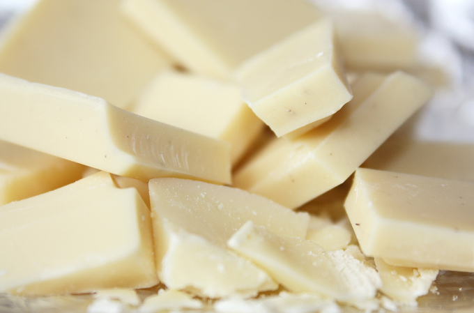

WHITE CHOCOLATE GANACHE
-
400 gr. heavy cream
(35% fat)
-
170 gr. white chocolate
-
30 gr. kirsch or cherry
liqueur
- 5 gr. vanilla
- 30 gr. cocoa powder
-
Hydrate the gelatin in cold water for
10 minutes.
-
Heat 120g of cream with
vanilla in a saucepan until it boils.
- Melt white chocolate in the microwave in short bursts.
-
Pour the boiled cream over the melted chocolate and whisk until
smooth.
- Add kirsch or cherry liqueur and whisk again.
- Add the remaining cream and whisk until shiny and uniform.
-
Cover with cling film and
refrigerate for at least 4 hours.